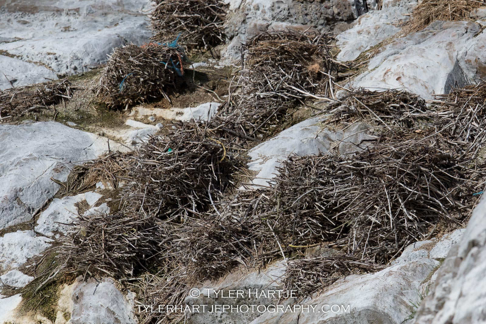
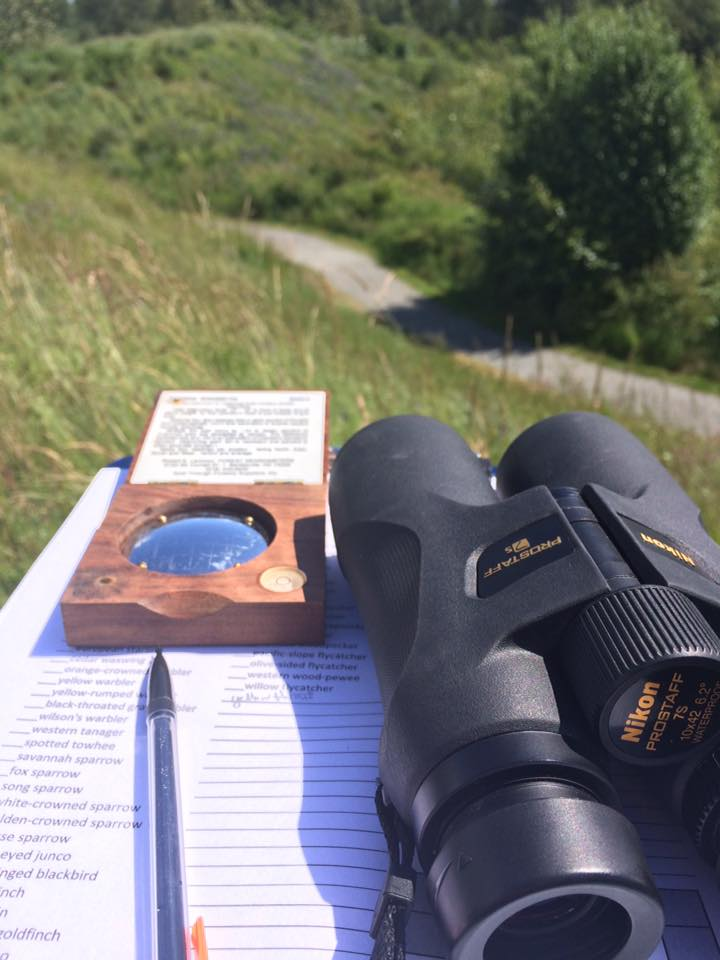

Conservation
We all share this small blue planet, not only with other people but with all of life. As a photographer and a naturalist, I strive to present natural history as I see it. As such, all my photos are of wild and unbaited subjects (aside from a few from my backyard bird feeders). While I'm in the field, I try my best to follow leave no trace principles.

Tyler considers himself to be a "fine-art conservation photographer". He strives to present his subjects in new light, while at the same time hopes to use those images for advocacy and environmental protection.
